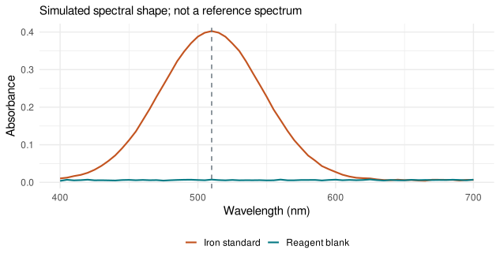
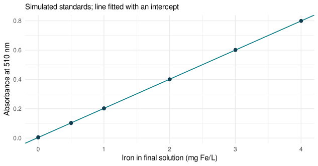
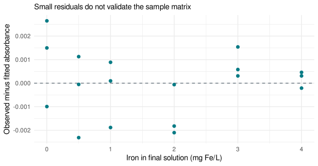
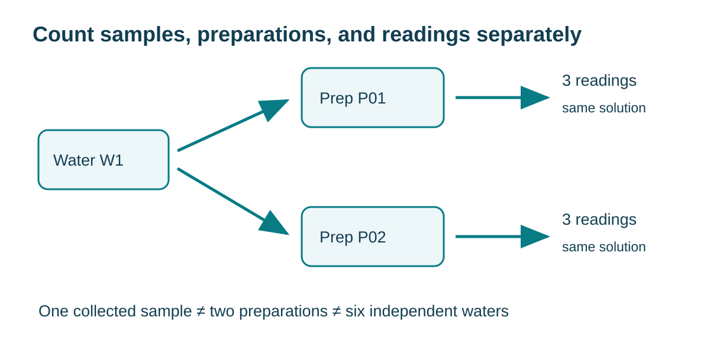
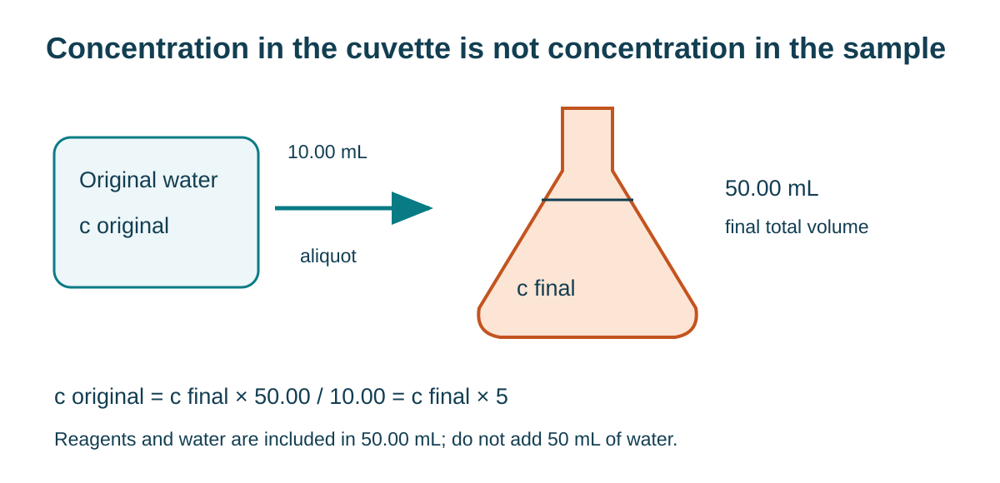
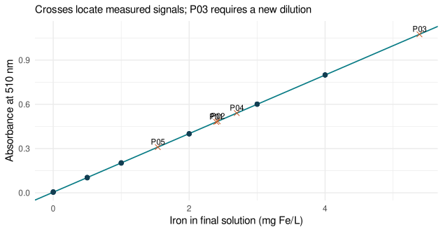
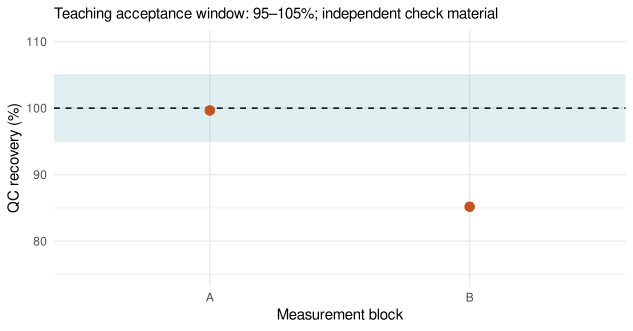
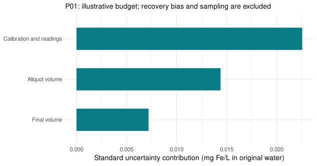
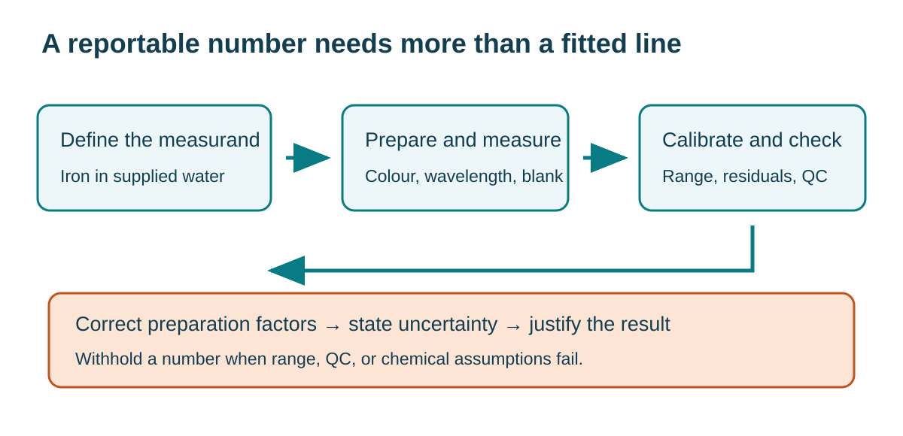

UV and visible absorption
Iron in water: from colour to concentration
About this lecture
A coloured solution gives an absorbance. We want mg elemental Fe/L in the supplied filtered water.
- Explain what absorbs and how light is measured.
- Fit a justified calibration and return to the original sample basis.
- Decide what range, QC and uncertainty evidence permit us to report.
The chemical absorber
Iron is reduced to Fe(II), then complexed with excess 1,10-phenanthroline (phen).
We assume quantitative conversion and no analyte loss.

What the detector measures
T=I/I_0, then A=-\log_{10}T.
A reagent blank establishes the reference under matched conditions.

Why select a wavelength?
A strong response near 510 nm supports useful sensitivity.
A maximum does not prove the sample has no other absorber.

Beer–Lambert connects light and composition
A=\varepsilon l c at fixed wavelength, with appropriate chemical and instrumental conditions.
For a molar absorptivity, c is in mol/L. Our empirical line instead uses mg Fe/L.
Doubling absorbance does not halve transmission
T=0.80\Rightarrow A\approx0.09691.
If A doubles, T=10^{-A} becomes 0.64, not 0.40.

Fit the quantity we deliberately varied
Known final concentrations are the explanatory variable; absorbance is the response.
fit <- lm(absorbance ~ standard_mg_l, data = standards)

Interpret the fitted relationship
A=0.003874+0.198799c_{final}.
The slope has units L/mg Fe; the offset is estimated from the data.
Residuals ask whether the line misses structure
Residual = observed response − fitted response.
Inspect curvature, changing spread and unusual points before accepting the model.

Invert the response model
\hat c_{final}=(\overline A-a)/b.
P01 has \overline A=0.480620, giving 2.398 mg Fe/L final.
Count the experimental units
P01 and P02 are separate preparations of W1; each has three readings.
Six readings are not six independently collected waters.

Carry the preparation record into the calculation
c_{original}=c_{final} V_{final}/V_{aliquot}.
P01: 2.398\times50.00/10.00\approx 11.99 mg Fe/L original.

A new dilution means a new measurement
P03 exceeds the calibrated response range.
P04 is a new 5.00 mL aliquot made to 50.00 mL and measured again.

Independent QC can block an in-range result
Check material: 2.00 mg Fe/L. Exercise acceptance: 95–105% recovery.
The later block B fails, so P05 is withheld.

Uncertainty survives repeat readings
P01: 11.991 mg Fe/L, with standard uncertainty 0.028 mg Fe/L from the stated model.
That number is not a 95% half-width.

A result needs its chemical assumptions
Which check addresses contamination? Which challenges the line? Which could detect a sample-specific matrix effect?

Explore the mechanism, then test a claim
Embedded experiment: change path or wavelength, then introduce stray light.
Predict the response before moving a control. Export a scenario and reproduce the calculation in R.
Take the complete argument into the exercise
By hand, demo and R tasks · Check your reasoning
Report the absorber, wavelength, concentration basis, preparation factor, checks and uncertainty limitations.